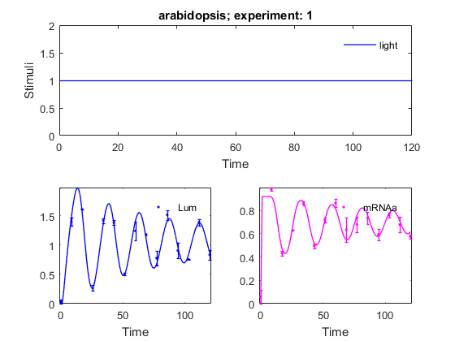
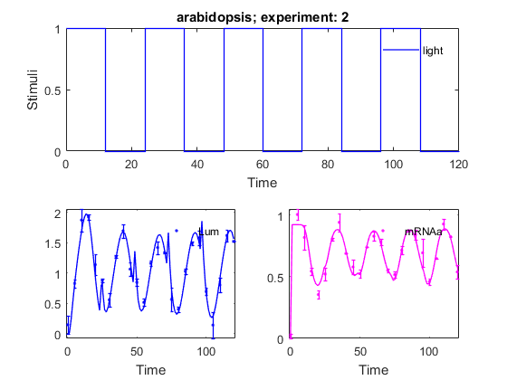
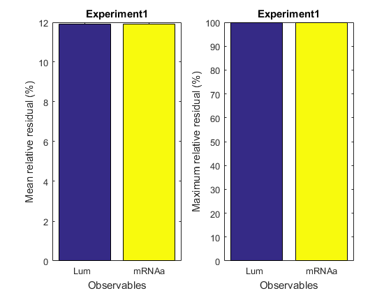
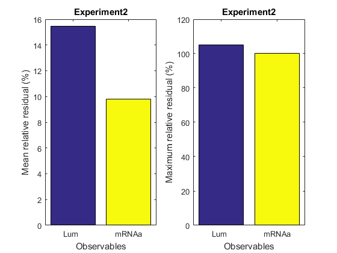
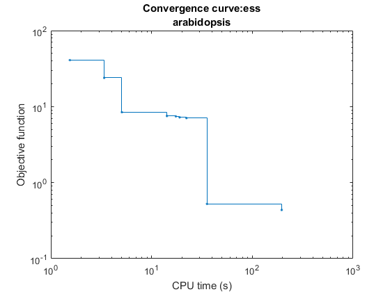
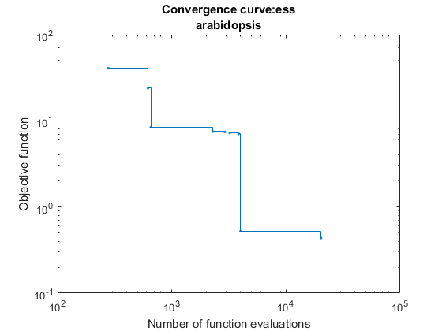
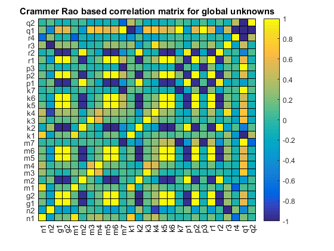
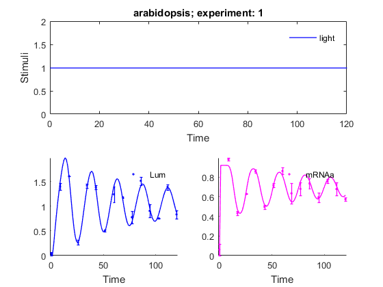
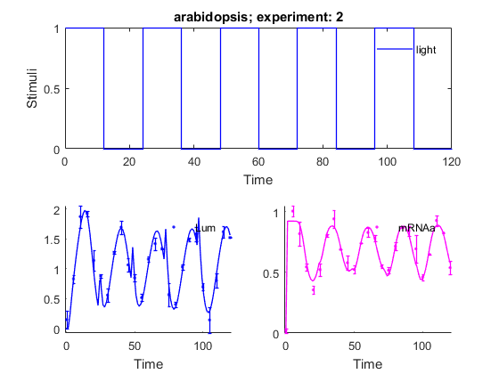

AMIGO_PE Estimation with exact Jacobian
Contents
Parameter estimations are often formulated as nonlinear least squares optimization problems. For best performance solve these problems with a tailored non-linear least squares algorithm, e.g. NL2SOL, combined with the global optimizer eSS. NL2SOL uses the Jacobian matrix of the residual vector to update the estimated parameter values in each step. In case, the model is given as charmodelC, AMIGO can generate the sensitivity equations of the ODEs and enhance the performance of the Jacobian computation. (Symbolic Toolbox needed)
Requirements:
inputs.model.input_model_type='charmodelC'; % use compiled C model for best performance
inputs.ivpsol.ivpsolver = 'cvodes'; % Use CVODES for the solution of ODEs and sensitivity equations.
inputs.model.AMIGOsensrhs = 1; % AMIGO generates the symbolic sensitivity equations of the model and export it to C.
inputs.PEsol.PEcostJac_type = 'lsq'; % or 'llk'. Tell AMIGO to compute the Jacobian of the lsq or llk cost function
Example
% TITLE: The circadian clock in Arabidopsis thaliana

%============================ % RESULTS PATHS RELATED DATA %============================ inputs.pathd.results_folder='arabidopsis'; % Folder to keep results (in Results\) inputs.pathd.short_name='arabidopsis'; % Label to identify figures and reports %============================ % MODEL DEFINITION %============================ inputs.model.input_model_type='charmodelC'; % Model type- C inputs.model.n_st=7; % Number of states inputs.model.n_par=27; % Number of model parameters inputs.model.n_stimulus=1; % Number of inputs, stimuli or control variables inputs.model.st_names=char('CL_m','CL_c',...% Names of the states + states for path constraints 'CL_n','CT_m','CT_c','CT_n','CP_n'); inputs.model.par_names=char('n1','n2','g1','g2','m1','m2','m3','m4','m5','m6',... 'm7','k1','k2','k3','k4','k5','k6','k7','p1','p2',... 'p3','r1','r2','r3','r4','q1','q2'); % Names of the parameters inputs.model.stimulus_names=char('light'); % Names of the stimuli, inputs or controls inputs.model.eqns=... % Equations describing system dynamics. char('dCL_m=q1*CP_n*light+n1*CT_n/(g1+CT_n)-m1*CL_m/(k1+CL_m)',... 'dCL_c=p1*CL_m-r1*CL_c+r2*CL_n-m2*CL_c/(k2+CL_c)',... 'dCL_n=r1*CL_c-r2*CL_n-m3*CL_n/(k3+CL_n)',... 'dCT_m=n2*g2^2/(g2^2+CL_n^2)-m4*CT_m/(k4+CT_m)',... 'dCT_c=p2*CT_m-r3*CT_c+r4*CT_n-m5*CT_c/(k5+CT_c)',... 'dCT_n=r3*CT_c-r4*CT_n-m6*CT_n/(k6+CT_n)',... 'dCP_n=(1-light)*p3-m7*CP_n/(k7+CP_n)-q2*light*CP_n'); inputs.model.AMIGOsensrhs = 1; % generate sensitivity equations inputs.model.AMIGOjac =1; % enhance the solution of the ODEs by computing symbolic Jacobian of the ODEs
IMPORTANT:
User may select any customised name but: n, t, u, y, ydot, par, tlast, told, pend and v which are reserved words
inputs.model.par=[7.5038 0.6801 1.4992 3.0412 10.0982... % Nominal parameter 1.9685 3.7511 2.3422 7.2482 1.8981 1.2 3.8045... % values 5.3087 4.1946 2.5356 1.4420 4.8600 1.2 2.1994... 9.4440 0.5 0.2817 0.7676 0.4364 7.3021 4.5703 1.0]; %============================================ % EXPERIMENTAL SCHEME (SIMULATION CONDITIONS) %============================================ inputs.exps.n_exp=2; % Number of experiments % EXPERIMENT 1 inputs.exps.exp_y0{1}=[0 0 0 0 0 0 0 ]; % Initial conditions inputs.exps.t_f{1}=120; % Experiments duration inputs.exps.n_obs{1}=2; % Number of observables inputs.exps.obs_names{1}=char('Lum','mRNAa'); % Names of the observables inputs.exps.obs{1}=char('Lum=CL_m',... % Observation function 'mRNAa=CT_m'); inputs.exps.u_interp{1}='sustained'; % Stimuli definition for experiment 1 inputs.exps.t_con{1}=[0 120]; % Input swithching times including: % Initial and final time inputs.exps.u{1}=1; % Values of the inputs for exp 1 inputs.exps.n_s{1}=15; % Number of sampling times % EXPERIMENT 2 inputs.exps.exp_y0{2}=[0 0 0 0 0 0 0 ]; % Initial conditions inputs.exps.t_f{2}=120; % Experiments duration inputs.exps.n_obs{2}=2; % Number of observables inputs.exps.obs_names{2}=char('Lum','mRNAa'); % Names of the observables inputs.exps.obs{2}=char('Lum=CL_m',... % Observation function 'mRNAa=CT_m'); inputs.exps.u_interp{2}='pulse-down'; % Stimuli definition for experiment 2 inputs.exps.n_pulses{2}=5; % Number of pulses inputs.exps.u_min{2}=0; % Minimum and maximum of inputs inputs.exps.u_max{2}=1; inputs.exps.t_con{2}=0:12:120; % Input switching times inputs.exps.n_s{2}=25; % Number of sampling times %================================== % EXPERIMENTAL DATA RELATED INFO %================================== % EXPERIMENT 1 inputs.exps.data_type='real'; % Type of data inputs.exps.exp_data{1}=[ % Matrix of ns{iexp} x n_obs{iexp} 0.037642 0.059832 % with experimental data 1.398618 0.983442 1.606762 0.433379 0.265345 0.628819 1.417288 0.858973 1.381613 0.496637 0.504584 0.717923 1.240249 0.862584 1.180193 0.634508 0.775945 0.679648 1.514514 0.735783 0.904653 0.593644 0.753736 0.759013 1.389312 0.678665 0.833228 0.574736 ]; inputs.exps.error_data{1}=[ % Matrix of ns{iexp} x n_obs{iexp} 0.037642 0.059832 % with experimental error 0.072461 0.013999 0.002877 0.020809 0.050324 0.002705 0.042936 0.017832 0.044338 0.022538 0.016335 0.017981 0.164745 0.035301 0.010631 0.102381 0.127745 0.065791 0.081671 0.049568 0.126739 0.050306 0.006308 0.018894 0.054665 0.066953 0.082163 0.015295 ]; % EXPERIMENT 2 inputs.exps.exp_data{2}=[ 0.146016 0.018152 0.831813 1.002499 1.874870 0.816779 1.927580 0.544111 1.139536 0.354476 0.876938 0.520424 0.559600 0.802322 1.273548 0.939453 1.696482 0.687495 1.065496 0.577896 0.847460 0.524076 0.517520 0.738095 1.162232 0.826737 1.421504 0.779833 1.340639 0.550493 0.563822 0.515605 0.402755 0.714877 1.029856 0.871118 1.490741 0.840174 1.580873 0.692047 0.696610 0.459481 0.141546 0.646803 0.804194 0.925806 1.622378 0.824711 1.525194 0.537398 ]; inputs.exps.error_data{2}=[ 0.146016 0.018152 0.066547 0.045194 0.184009 0.101495 0.047431 0.030858 0.175280 0.033712 0.031945 0.048733 0.107148 0.008715 0.019847 0.072804 0.111892 0.001840 0.104932 0.058752 0.059721 0.033324 0.056537 0.000360 0.051815 0.037473 0.103393 0.028094 0.008084 0.012024 0.188444 0.022982 0.046354 0.031981 0.043436 0.003749 0.030177 0.042560 0.116245 0.110535 0.059345 0.025112 0.218587 0.000564 0.115783 0.043708 0.099239 0.002678 0.010644 0.052990 ]; %================================== % UNKNOWNS RELATED DATA %================================== % Select the GLOBAL parameters/initial conditions to be considered by PE inputs.PEsol.id_global_theta='all'; % 'all'|User selected % In order to use AMIGO_PE you need to specify upper and lower % bounds on the parameters. An initial guess is optional. inputs.PEsol.global_theta_max=200.*ones(1,27); inputs.PEsol.global_theta_min=0.001.*ones(1,27); %============================================================= % COST FUNCTION RELATED DATA % SOLVING THE PROBLEM WITH WEIGHTED LEAST SQUARES FUNCTION %============================================================= inputs.PEsol.PEcost_type='lsq'; % 'lsq' (weighted least squares default) inputs.PEsol.PEcostJac_type = 'lsq'; % compute the Jacobian of the residuals inputs.PEsol.lsq_type='Q_I'; % Weights: % Q_I: identity matrix; Q_expmax: maximum experimental data % Q_expmean: mean experimental data; % Q_mat: user selected weighting matrix
Solving the parameter estimation problem
%================================== % NUMERICAL METHDOS RELATED DATA %================================== % SIMULATION % Default for charmodel C: CVODES % OPTIMIZATION inputs.nlpsol.nlpsolver='ess'; % In this case the problem will be solved with eSS inputs.nlpsol.eSS.maxeval=20000; % Maximum number of function evaluations inputs.nlpsol.eSS.maxtime=300; % Maximum allowed time in s for eSS inputs.nlpsol.eSS.local.solver='nl2sol'; % Local solver in eSS inputs.nlpsol.eSS.local.iterprint=0; % Do not print intermediate results %==================================================== % CALL AMIGO2 from COMMAND LINE - LEAST SQUARES CASE %==================================================== % It is recommended to keep all inputs in a 'problem_file'.m. % AMIGO2 PE task can be called as follows: % AMIGO_PE('problem_file','run_ident') or AMIGO_ContourP(inputs) AMIGO_Prep(inputs); AMIGO_PE(inputs);
***********************************
AMIGO2, Copyright @CSIC
AMIGO2_R2016a [April 2016]
***********************************
*Date: 13-Apr-2016
------>Pre processing....this may take a few seconds.
------>Checking inputs....
------> WARNING message
AMIGO_check_model: You did not specify inputs.model.exe_type, standard will be assumed
Warning: AMIGO_check_IVPsolver: Changing ivp solver to the only option
compatible with charmodelC, cvodes
Warning: AMIGO_check_IVPsolver: Changing sensitivities solver to, cvodes
-->Jacobian or sensitivity calculation detected. Checking the Symbolic Toolbox.
------>Constructing the Jacobian....
0 algebraic and 7 differential equations are found.
Warning: SUBS(S,OLD,NEW,0) will not accept 0 in a future release. Use
SUBS(S,OLD,NEW) instead.
Warning: SUBS(S,OLD,NEW,0) will not accept 0 in a future release. Use
SUBS(S,OLD,NEW) instead.
Constructing symbolic Jacobians...Warning: SUBS(S,OLD,NEW,0) will not accept 0 in a future release. Use
SUBS(S,OLD,NEW) instead.
Done
------> Constructing the Forward Sensitivity Equations....
Symbolic Jacobian of the dynamic equations to text: Done.
Symbolic Sensitivities of the dynamic equations to text:
First part(df/dx*s): Done
Second part(df/dp): ............. Done
Elapsed time is 0.644693 seconds.
------> Generating C code ...
------> Mexing files....
Building with 'MinGW64 Compiler (C)'.
D:\AMIGO2_REPO_2014\AMIGO2R2016a\Kernel\IVP_solvers\cvodes\C_src4Amigo\src\src_amigo\simulate_amigo_model.c: In function 'simulate_amigo_model':
D:\AMIGO2_REPO_2014\AMIGO2R2016a\Kernel\IVP_solvers\cvodes\C_src4Amigo\src\src_amigo\simulate_amigo_model.c:331:16: warning: passing argument 1 of 'mexPrintf' from incompatible pointer type
mexPrintf(stderr,"\nSolver failed at flag = CVode(cvode_mem, tout, y, &t, CV_TSTOP_RETURN);. . .\n");
^
In file included from D:\AMIGO2_REPO_2014\AMIGO2R2016a\Kernel\IVP_solvers\cvodes\C_src4Amigo\include\include_amigo/simulate_amigo_model.h:4:0,
from D:\AMIGO2_REPO_2014\AMIGO2R2016a\Kernel\IVP_solvers\cvodes\C_src4Amigo\src\src_amigo\simulate_amigo_model.c:1:
C:\MATLAB_R2015b_64/extern/include/mex.h:202:27: note: expected 'const char *' but argument is of type 'struct FILE *'
LIBMWMEX_API_EXTERN_C int mexPrintf(
^
D:\AMIGO2_REPO_2014\AMIGO2R2016a\Kernel\IVP_solvers\cvodes\C_src4Amigo\src\src_interface\interface_with_matlab.c: In function 'mexFunction':
D:\AMIGO2_REPO_2014\AMIGO2R2016a\Kernel\IVP_solvers\cvodes\C_src4Amigo\src\src_interface\interface_with_matlab.c:200:17: warning: assignment from incompatible pointer type
stats_struct = mxGetPr(plhs[5]);
^
MEX completed successfully.
------>Files generated....
***********************************
AMIGO2, Copyright @CSIC
AMIGO2_R2016a [April 2016]
***********************************
*Date: 13-Apr-2016
------>Checking inputs....
------> WARNING message
AMIGO_check_model: You did not specify inputs.model.exe_type, standard will be assumed
Warning: AMIGO_check_IVPsolver: Changing ivp solver to the only option
compatible with charmodelC, cvodes
Warning: AMIGO_check_IVPsolver: Changing sensitivities solver to, cvodes
------> WARNING message
You have not provided the sampling times.
Equidistant sampling will be assumed for experiment 1
Note however that you may modify your input file by adding
inputs.exps.t_s{iexp}
------> WARNING message
You have not provided the sampling times.
Equidistant sampling will be assumed for experiment 2
Note however that you may modify your input file by adding
inputs.exps.t_s{iexp}
ans =
Columns 1 through 7
100.0005 100.0005 100.0005 100.0005 100.0005 100.0005 100.0005
Columns 8 through 14
100.0005 100.0005 100.0005 100.0005 100.0005 100.0005 100.0005
Columns 15 through 21
100.0005 100.0005 100.0005 100.0005 100.0005 100.0005 100.0005
Columns 22 through 27
100.0005 100.0005 100.0005 100.0005 100.0005 100.0005
Warning: Directory access failure:
D:\AMIGO2_REPO_2014\AMIGO2R2016a\Results\arabidopsis\AMIGO_gen_obs_arabidopsis.m
ans =
D:\AMIGO2_REPO_2014\AMIGO2R2016a\Results\arabidopsis\AMIGO_gen_obs_arabidopsis.m
*************************************************************************
------>IMPORTANT!!: Most of the optimization solvers have their own
tunning parameters (options).
Defaults have been assigned in the *NLPsolver*_options
files. You may need to modify those settings for your
particular problem, specially:
- maximum number of function evaluations /iterations,
- maximum computational time
******************************************************************
Solving the NLP problem with
>Summary of selected eSS options:
ess_options.
combination: 1
delete: 'standard'
dim_refset: 'auto'
diverse_criteria: 1
initiate: 1
intens: 10
inter_save: 0
iterprint: 1
local: (1x1 struct)
log_var: []
maxeval: 20000
maxtime: 300
n_stuck: 0
ndiverse: 'auto'
plot: 0
prob_bound: 0.5
regenerate: 3
strategy: 0
tolc: 1e-05
tolf: 0.0001
tolx: 0.001
weight: 1000000
nl2sol_settings.
display: 1
grad: 'internalFD'
iterfun: []
maxfeval: 550
maxiter: 500
objrtol: 1e-05
tolafun: 1e-06
tolrfun: 1e-06
>Bounds on the unknowns:
v_guess(1)=100.000500; v_min(1)=0.001000; v_max(1)=200.000000;
v_guess(2)=100.000500; v_min(2)=0.001000; v_max(2)=200.000000;
v_guess(3)=100.000500; v_min(3)=0.001000; v_max(3)=200.000000;
v_guess(4)=100.000500; v_min(4)=0.001000; v_max(4)=200.000000;
v_guess(5)=100.000500; v_min(5)=0.001000; v_max(5)=200.000000;
v_guess(6)=100.000500; v_min(6)=0.001000; v_max(6)=200.000000;
v_guess(7)=100.000500; v_min(7)=0.001000; v_max(7)=200.000000;
v_guess(8)=100.000500; v_min(8)=0.001000; v_max(8)=200.000000;
v_guess(9)=100.000500; v_min(9)=0.001000; v_max(9)=200.000000;
v_guess(10)=100.000500; v_min(10)=0.001000; v_max(10)=200.000000;
v_guess(11)=100.000500; v_min(11)=0.001000; v_max(11)=200.000000;
v_guess(12)=100.000500; v_min(12)=0.001000; v_max(12)=200.000000;
v_guess(13)=100.000500; v_min(13)=0.001000; v_max(13)=200.000000;
v_guess(14)=100.000500; v_min(14)=0.001000; v_max(14)=200.000000;
v_guess(15)=100.000500; v_min(15)=0.001000; v_max(15)=200.000000;
v_guess(16)=100.000500; v_min(16)=0.001000; v_max(16)=200.000000;
v_guess(17)=100.000500; v_min(17)=0.001000; v_max(17)=200.000000;
v_guess(18)=100.000500; v_min(18)=0.001000; v_max(18)=200.000000;
v_guess(19)=100.000500; v_min(19)=0.001000; v_max(19)=200.000000;
v_guess(20)=100.000500; v_min(20)=0.001000; v_max(20)=200.000000;
v_guess(21)=100.000500; v_min(21)=0.001000; v_max(21)=200.000000;
v_guess(22)=100.000500; v_min(22)=0.001000; v_max(22)=200.000000;
v_guess(23)=100.000500; v_min(23)=0.001000; v_max(23)=200.000000;
v_guess(24)=100.000500; v_min(24)=0.001000; v_max(24)=200.000000;
v_guess(25)=100.000500; v_min(25)=0.001000; v_max(25)=200.000000;
v_guess(26)=100.000500; v_min(26)=0.001000; v_max(26)=200.000000;
v_guess(27)=100.000500; v_min(27)=0.001000; v_max(27)=200.000000;
------------------------------------------------------------------------------
eSS R2010B - Enhanced Scatter Search
<c> IIM-CSIC, Vigo, Spain - email: gingproc@iim.csic.es
------------------------------------------------------------------------------
Refset size automatically calculated: 18
Number of diverse solutions automatically calculated: 270
-----------------------------------------------
Initial value problem related active settings
-----------------------------------------------
ivpsolver: cvodes
RelTol: 1e-05
AbsTol: 1e-07
Jacobian: symbolically given
MaxStepSize: Inf
MaxNumberOfSteps: 1e+06
Initial Pop: NFunEvals: 278 Bestf: 40.8681 CPUTime: 1.544410 Var: 4.68435e+17
Iteration: 1 NFunEvals: 619 Bestf: 23.8838 CPUTime: 3.385222 Var: 7753.41
Call local solver: NL2SOL
Initial point function value: 23.883765
------------------------------------------------------------------
This is DN2GB (NL2SOL v2.3)
Authors: John Dennis, David Gay, Roy Welsch
MEX Interface J. Currie 2012
Problem Properties:
# Decision Variables: 27
# Data Points: 80
------------------------------------------------------------------
---------------------------------------------------
Local sensitivity problem related active settings
---------------------------------------------------
senssolver: cvodes
ivp_RelTol: 1e-05
ivp_AbsTol: 1e-07
sens_RelTol: ~1e-05
sensmex: cvodesg_arabidopsis
Jacobian: symbolically given
Forward Sensitivity Equations: symbolically given
MaxStepSize: Inf
MaxNumberOfSteps: 1e+06
sens_RelTol: ~1e-05
*** TERMINATION: EARLY EXIT ***
*** CAUSE: singular convergence. the hessian near the current iterate appears to be singular or nearly so. ***
------------------------------------------------------------------
NL2SOL ended after 16 iteration and 34 function evaluation:
Results: Singular convergence
Local solution function value: 8.43232
Number of function evaluations in the local search: 36
CPU Time of the local search: 1.637162 seconds
Iteration: 2 NFunEvals: 989 Bestf: 8.43232 CPUTime: 7.160446 Var: 290.923
Iteration: 3 NFunEvals: 1316 Bestf: 8.43232 CPUTime: 8.845257 Var: 77.1222
Iteration: 4 NFunEvals: 1642 Bestf: 8.43232 CPUTime: 10.623668 Var: 29.1357
Iteration: 5 NFunEvals: 1963 Bestf: 8.43232 CPUTime: 12.402079 Var: 12.942
Iteration: 6 NFunEvals: 2282 Bestf: 7.51615 CPUTime: 14.196091 Var: 4.30916
Iteration: 7 NFunEvals: 2596 Bestf: 7.51615 CPUTime: 15.818501 Var: 0.462951
Iteration: 8 NFunEvals: 2916 Bestf: 7.42588 CPUTime: 17.409712 Var: 0.559214
Iteration: 9 NFunEvals: 3227 Bestf: 7.22202 CPUTime: 18.969722 Var: 0.553879
Iteration: 10 NFunEvals: 3541 Bestf: 7.22202 CPUTime: 20.576532 Var: 0.373193
Iteration: 11 NFunEvals: 3854 Bestf: 7.05992 CPUTime: 22.167742 Var: 0.425315
Call local solver: NL2SOL
Initial point function value: 7.360859
------------------------------------------------------------------
This is DN2GB (NL2SOL v2.3)
Authors: John Dennis, David Gay, Roy Welsch
MEX Interface J. Currie 2012
Problem Properties:
# Decision Variables: 27
# Data Points: 80
------------------------------------------------------------------
*** TERMINATION: EARLY EXIT ***
*** CAUSE: false convergence. the iterates appear to be converging to a noncritical point. this may mean that the convergence tolerances are too small ***
------------------------------------------------------------------
NL2SOL ended after 82 iteration and 139 function evaluation:
Results: False convergence
Local solution function value: 0.524143
Number of function evaluations in the local search: 141
CPU Time of the local search: 12.986395 seconds
Iteration: 12 NFunEvals: 4310 Bestf: 0.524143 CPUTime: 37.206238 Var: 3.62304
Iteration: 13 NFunEvals: 4626 Bestf: 0.524143 CPUTime: 38.797449 Var: 3.60087
Iteration: 14 NFunEvals: 4937 Bestf: 0.524143 CPUTime: 40.373059 Var: 3.64688
Iteration: 15 NFunEvals: 5247 Bestf: 0.524143 CPUTime: 41.964269 Var: 3.61875
Iteration: 16 NFunEvals: 5559 Bestf: 0.524143 CPUTime: 43.571079 Var: 3.57144
Iteration: 17 NFunEvals: 5870 Bestf: 0.524143 CPUTime: 45.162290 Var: 3.58304
Iteration: 18 NFunEvals: 6181 Bestf: 0.524143 CPUTime: 46.831500 Var: 3.61424
Iteration: 19 NFunEvals: 6491 Bestf: 0.524143 CPUTime: 48.422710 Var: 3.56625
Iteration: 20 NFunEvals: 6804 Bestf: 0.524143 CPUTime: 50.029521 Var: 3.54031
Iteration: 21 NFunEvals: 7117 Bestf: 0.524143 CPUTime: 51.605131 Var: 3.58213
Call local solver: NL2SOL
Initial point function value: 8.390059
------------------------------------------------------------------
This is DN2GB (NL2SOL v2.3)
Authors: John Dennis, David Gay, Roy Welsch
MEX Interface J. Currie 2012
Problem Properties:
# Decision Variables: 27
# Data Points: 80
------------------------------------------------------------------
*** TERMINATION: EARLY EXIT ***
*** CAUSE: singular convergence. the hessian near the current iterate appears to be singular or nearly so. ***
------------------------------------------------------------------
NL2SOL ended after 111 iteration and 182 function evaluation:
Results: Singular convergence
Local solution function value: 6.35809
Number of function evaluations in the local search: 184
CPU Time of the local search: 15.196843 seconds
Iteration: 22 NFunEvals: 7621 Bestf: 0.524143 CPUTime: 68.578040 Var: 204.823
Iteration: 23 NFunEvals: 7933 Bestf: 0.524143 CPUTime: 70.138050 Var: 4.78336
Iteration: 24 NFunEvals: 8246 Bestf: 0.524143 CPUTime: 71.807260 Var: 3.48229
Iteration: 25 NFunEvals: 8560 Bestf: 0.524143 CPUTime: 73.351670 Var: 3.49321
Iteration: 26 NFunEvals: 8868 Bestf: 0.524143 CPUTime: 75.005281 Var: 3.51003
Iteration: 27 NFunEvals: 9180 Bestf: 0.524143 CPUTime: 76.627691 Var: 3.51326
Iteration: 28 NFunEvals: 9492 Bestf: 0.524143 CPUTime: 78.203301 Var: 3.51562
Iteration: 29 NFunEvals: 9810 Bestf: 0.524143 CPUTime: 79.825712 Var: 3.51907
Iteration: 30 NFunEvals: 10121 Bestf: 0.524143 CPUTime: 81.510522 Var: 3.52406
Iteration: 31 NFunEvals: 10434 Bestf: 0.524143 CPUTime: 83.132933 Var: 3.50493
Call local solver: NL2SOL
Initial point function value: 8.357329
------------------------------------------------------------------
This is DN2GB (NL2SOL v2.3)
Authors: John Dennis, David Gay, Roy Welsch
MEX Interface J. Currie 2012
Problem Properties:
# Decision Variables: 27
# Data Points: 80
------------------------------------------------------------------
*** TERMINATION: EARLY EXIT ***
*** CAUSE: false convergence. the iterates appear to be converging to a noncritical point. this may mean that the convergence tolerances are too small ***
------------------------------------------------------------------
NL2SOL ended after 116 iteration and 208 function evaluation:
Results: False convergence
Local solution function value: 6.25512
Number of function evaluations in the local search: 210
CPU Time of the local search: 19.277596 seconds
Iteration: 32 NFunEvals: 10955 Bestf: 0.524143 CPUTime: 104.161868 Var: 6.11218
Iteration: 33 NFunEvals: 11264 Bestf: 0.524143 CPUTime: 105.877879 Var: 0.918038
Iteration: 34 NFunEvals: 11576 Bestf: 0.524143 CPUTime: 107.703090 Var: 0.946313
Iteration: 35 NFunEvals: 11886 Bestf: 0.524143 CPUTime: 109.278701 Var: 0.955528
Iteration: 36 NFunEvals: 12198 Bestf: 0.524143 CPUTime: 110.963511 Var: 0.972677
Iteration: 37 NFunEvals: 12508 Bestf: 0.524143 CPUTime: 112.523521 Var: 0.986658
Iteration: 38 NFunEvals: 12820 Bestf: 0.524143 CPUTime: 114.130332 Var: 1.02808
Iteration: 39 NFunEvals: 13130 Bestf: 0.524143 CPUTime: 115.705942 Var: 1.03893
Iteration: 40 NFunEvals: 13445 Bestf: 0.524143 CPUTime: 117.406353 Var: 1.08901
Iteration: 41 NFunEvals: 13757 Bestf: 0.524143 CPUTime: 119.059963 Var: 1.09769
Call local solver: NL2SOL
Initial point function value: 9.820726
------------------------------------------------------------------
This is DN2GB (NL2SOL v2.3)
Authors: John Dennis, David Gay, Roy Welsch
MEX Interface J. Currie 2012
Problem Properties:
# Decision Variables: 27
# Data Points: 80
------------------------------------------------------------------
*** TERMINATION: EARLY EXIT ***
*** CAUSE: false convergence. the iterates appear to be converging to a noncritical point. this may mean that the convergence tolerances are too small ***
------------------------------------------------------------------
NL2SOL ended after 110 iteration and 206 function evaluation:
Results: False convergence
Local solution function value: 6.26144
Number of function evaluations in the local search: 208
CPU Time of the local search: 16.967820 seconds
Iteration: 42 NFunEvals: 14282 Bestf: 0.524143 CPUTime: 138.029685 Var: 47.8172
Iteration: 43 NFunEvals: 14598 Bestf: 0.524143 CPUTime: 139.667695 Var: 1.52639
Iteration: 44 NFunEvals: 14909 Bestf: 0.524143 CPUTime: 141.243305 Var: 1.0087
Iteration: 45 NFunEvals: 15219 Bestf: 0.524143 CPUTime: 142.803315 Var: 1.03321
Iteration: 46 NFunEvals: 15542 Bestf: 0.524143 CPUTime: 144.456926 Var: 300.899
Iteration: 47 NFunEvals: 15854 Bestf: 0.524143 CPUTime: 146.032536 Var: 2.57001
Iteration: 48 NFunEvals: 16172 Bestf: 0.524143 CPUTime: 147.732947 Var: 0.911193
Iteration: 49 NFunEvals: 16495 Bestf: 0.524143 CPUTime: 149.402158 Var: 0.950693
Iteration: 50 NFunEvals: 16811 Bestf: 0.524143 CPUTime: 150.977768 Var: 0.839485
Iteration: 51 NFunEvals: 17125 Bestf: 0.524143 CPUTime: 152.631378 Var: 0.866099
Call local solver: NL2SOL
Initial point function value: 6.153159
------------------------------------------------------------------
This is DN2GB (NL2SOL v2.3)
Authors: John Dennis, David Gay, Roy Welsch
MEX Interface J. Currie 2012
Problem Properties:
# Decision Variables: 27
# Data Points: 80
------------------------------------------------------------------
*** TERMINATION: EARLY EXIT ***
*** CAUSE: false convergence. the iterates appear to be converging to a noncritical point. this may mean that the convergence tolerances are too small ***
------------------------------------------------------------------
NL2SOL ended after 71 iteration and 111 function evaluation:
Results: False convergence
Local solution function value: 0.534563
Number of function evaluations in the local search: 113
CPU Time of the local search: 11.076166 seconds
Iteration: 52 NFunEvals: 17558 Bestf: 0.524143 CPUTime: 165.501461 Var: 76.3565
Iteration: 53 NFunEvals: 17877 Bestf: 0.524143 CPUTime: 167.108271 Var: 6.45593
Iteration: 54 NFunEvals: 18193 Bestf: 0.524143 CPUTime: 168.715082 Var: 2.94483
Iteration: 55 NFunEvals: 18511 Bestf: 0.524143 CPUTime: 170.555893 Var: 12.559
Iteration: 56 NFunEvals: 18828 Bestf: 0.524143 CPUTime: 172.131503 Var: 3.73881
Iteration: 57 NFunEvals: 19150 Bestf: 0.524143 CPUTime: 173.894315 Var: 2.74293
Iteration: 58 NFunEvals: 19471 Bestf: 0.524143 CPUTime: 175.579125 Var: 2.80958
Iteration: 59 NFunEvals: 19791 Bestf: 0.524143 CPUTime: 177.388737 Var: 2.87022
Iteration: 60 NFunEvals: 20105 Bestf: 0.524143 CPUTime: 178.995547 Var: 2.9087
Final local refinement with: NL2SOL
Initial point function value: 0.524143
------------------------------------------------------------------
This is DN2GB (NL2SOL v2.3)
Authors: John Dennis, David Gay, Roy Welsch
MEX Interface J. Currie 2012
Problem Properties:
# Decision Variables: 27
# Data Points: 80
------------------------------------------------------------------
*** TERMINATION: EARLY EXIT ***
*** CAUSE: false convergence. the iterates appear to be converging to a noncritical point. this may mean that the convergence tolerances are too small ***
------------------------------------------------------------------
NL2SOL ended after 109 iteration and 155 function evaluation:
Results: False convergence
Local solution function value: 0.436796
Number of function evaluations in the local search: 157
CPU Time of the local search: 16.497039 seconds
Maximum number of function evaluations achieved
Best solution value 0.436796
Decision vector
15.3118
9.06959
76.9958
32.3499
10.6764
30.8825
0.001
104.252
80.052
39.6239
179.87
9.72358
0.001
200
9.66103
199.923
0.001
186.959
29.3344
110.769
2.7975
26.7677
156.168
0.73464
16.396
1.11308
1.84647
CPU time 195.594
Number of function evaluations 20263
------> Computing Correlation Matrix for unknowns...<strong>
----------------------------------------------------------</strong><strong>
------> WARNING message
</strong><strong> The Fisher Information Matrix is nearly singular.
</strong><strong>----------------------------------------------------------
</strong>Warning: Matrix is close to singular or badly scaled. Results may be inaccurate.
RCOND = 4.224567e-23.
--------------------------------------------------------------------------
Experiment 1:
inputs.exp_data{1}=[
0.037642 0.059832
1.39862 0.983442
1.60676 0.433379
0.265345 0.628819
1.41729 0.858973
1.38161 0.496637
0.504584 0.717923
1.24025 0.862584
1.18019 0.634508
0.775945 0.679648
1.51451 0.735783
0.904653 0.593644
0.753736 0.759013
1.38931 0.678665
0.833228 0.574736
];
Experiment 2:
inputs.exp_data{2}=[
0.146016 0.018152
0.831813 1.0025
1.87487 0.816779
1.92758 0.544111
1.13954 0.354476
0.876938 0.520424
0.5596 0.802322
1.27355 0.939453
1.69648 0.687495
1.0655 0.577896
0.84746 0.524076
0.51752 0.738095
1.16223 0.826737
1.4215 0.779833
1.34064 0.550493
0.563822 0.515605
0.402755 0.714877
1.02986 0.871118
1.49074 0.840174
1.58087 0.692047
0.69661 0.459481
0.141546 0.646803
0.804194 0.925806
1.62238 0.824711
1.52519 0.537398
];
---------------------------------------------------------------------------------------------
>>>> Mean / Maximum value of the residuals in percentage (100*(data-model)/data):
Experiment 1 :
Observable 1 --> mean error: 11.921287 % max error: 100.000000 %
Observable 2 --> mean error: 11.906189 % max error: 100.000000 %
Experiment 2 :
Observable 1 --> mean error: 15.466764 % max error: 105.220759 %
Observable 2 --> mean error: 9.779826 % max error: 100.000000 %
--------------------------------------------------------------------------
--------------------------------------------------------------------
>>>> Maximum absolute value of the residuals (data-model):
Experiment 1 :
Observable 1 --> max residual: 0.158892 max data: 1.606762
Observable 2 --> max residual: 0.086186 max data: 0.983442
Experiment 2 :
Observable 1 --> max residual: 0.217264 max data: 1.927580
Observable 2 --> max residual: 0.124326 max data: 1.002499
--------------------------------------------------------------------------
>>>> Best objective function: 0.436796
>>>> Computational cost: 195.594054 s
> 100.00% of successful simulationn
> 100.00% of successful sensitivity calculations
>>> Best values found and the corresponding asymptotic confidence intervals
>>> Estimated global parameters:
n1 : 1.5312e+01 +- 1.8071e+02 (1.18e+03%);
n2 : 9.0696e+00 +- 6.0480e+03 (6.67e+04%);
g1 : 7.6996e+01 +- 6.5992e+05 (8.57e+05%);
g2 : 3.2350e+01 +- 9.3642e+06 (2.89e+07%);
m1 : 1.0676e+01 +- 7.6785e+01 ( 719%);
m2 : 3.0882e+01 +- 5.3890e+02 (1.75e+03%);
m3 : 1.0000e-03 +- 1.5999e+03 ( 1.6e+08%); (bound active)
m4 : 1.0425e+02 +- 3.9404e+04 (3.78e+04%);
m5 : 8.0052e+01 +- 6.8109e+05 (8.51e+05%);
m6 : 3.9624e+01 +- 3.3792e+05 (8.53e+05%);
m7 : 1.7987e+02 +- 0.0000e+00 ( 0%);
k1 : 9.7236e+00 +- 6.5410e+01 ( 673%);
k2 : 1.0000e-03 +- 4.8324e+01 (4.83e+06%); (bound active)
k3 : 2.0000e+02 +- 3.7637e+08 (1.88e+08%); (bound active)
k4 : 9.6610e+00 +- 8.1584e+03 (8.44e+04%);
k5 : 1.9992e+02 +- 1.7030e+06 (8.52e+05%);
k6 : 1.0000e-03 +- 8.4124e+00 (8.41e+05%); (bound active)
k7 : 1.8696e+02 +- 0.0000e+00 ( 0%);
p1 : 2.9334e+01 +- 5.1637e+02 (1.76e+03%);
p2 : 1.1077e+02 +- 9.4317e+05 (8.51e+05%);
p3 : 2.7975e+00 +- 0.0000e+00 ( 0%);
r1 : 2.6768e+01 +- 7.8493e+06 (2.93e+07%);
r2 : 1.5617e+02 +- 7.4442e+06 (4.77e+06%);
r3 : 7.3464e-01 +- 1.0833e+02 (1.47e+04%);
r4 : 1.6396e+01 +- 2.1111e+03 (1.29e+04%);
q1 : 1.1131e+00 +- 0.0000e+00 ( 0%);
q2 : 1.8465e+00 +- 1.5475e+06 (8.38e+07%);
>>> Correlation matrix for the global unknowns:
1.000000e+00 -2.719385e-01 1.771797e-01 1.622569e-01 9.014308e-01 -2.068400e-02 2.877720e-01 3.775458e-01 1.625923e-01 1.639849e-01 -2.345448e-02 7.546410e-01 -1.702577e-01 2.941631e-01 4.202453e-01 1.625154e-01 3.077384e-02 -4.176186e-02 -2.131044e-02 1.631201e-01 -4.408139e-02 1.710939e-01 -1.020793e-01 2.881031e-01 -6.328590e-01 1.972799e-01 -2.833302e-02
-2.719385e-01 1.000000e+00 -3.036276e-01 -2.778720e-01 -2.287949e-01 1.704709e-01 5.716199e-02 -1.110393e-02 -2.827933e-01 -2.904258e-01 5.214770e-03 -2.765246e-01 2.888013e-01 -5.125385e-02 -8.703643e-01 -2.866674e-01 -2.008173e-01 7.630738e-02 1.845761e-01 -2.853997e-01 7.610402e-02 -3.170855e-01 2.688764e-02 -9.988685e-01 2.250025e-01 -4.515761e-01 9.856984e-02
1.771797e-01 -3.036276e-01 1.000000e+00 9.996768e-01 1.439456e-01 -9.429852e-01 -7.703261e-02 1.554854e-01 9.999945e-01 1.000143e+00 -4.551209e-02 1.872020e-01 -9.999062e-01 1.287560e-01 3.392371e-01 1.000078e+00 9.844250e-01 -1.158590e-01 -9.477819e-01 1.000054e+00 -1.160937e-01 1.000007e+00 -9.601007e-01 3.028982e-01 -8.540611e-02 5.826285e-01 -1.028922e-01
1.622569e-01 -2.778720e-01 9.996768e-01 1.000000e+00 1.241395e-01 -9.502989e-01 -7.922680e-02 1.589196e-01 9.999018e-01 9.998478e-01 -4.704565e-02 1.715441e-01 -9.998802e-01 1.247577e-01 3.185149e-01 9.998931e-01 9.875092e-01 -1.125218e-01 -9.545314e-01 9.998947e-01 -1.127483e-01 9.992097e-01 -9.672886e-01 2.766700e-01 -6.143750e-02 5.579210e-01 -9.638962e-02
9.014308e-01 -2.287949e-01 1.439456e-01 1.241395e-01 1.000000e+00 5.217655e-02 2.103479e-01 1.059533e-01 1.315389e-01 1.326512e-01 -3.522166e-02 8.503358e-01 -1.351906e-01 1.985412e-01 2.514138e-01 1.313724e-01 2.244840e-02 -2.876758e-02 5.543349e-02 1.319248e-01 -3.122499e-02 1.347869e-01 -7.449960e-02 2.492528e-01 -7.320652e-01 8.545981e-02 4.194572e-03
-2.068400e-02 1.704709e-01 -9.429852e-01 -9.502989e-01 5.217655e-02 1.000000e+00 1.508442e-01 -1.300447e-01 -9.409429e-01 -9.402256e-01 6.060815e-02 -2.409901e-03 9.419932e-01 -2.996382e-02 -2.101957e-01 -9.406797e-01 -9.446164e-01 8.022879e-02 9.988242e-01 -9.407273e-01 8.029614e-02 -9.391203e-01 9.377506e-01 -1.661728e-01 -9.701448e-02 -3.221461e-01 3.505683e-02
2.877720e-01 5.716199e-02 -7.703261e-02 -7.922680e-02 2.103479e-01 1.508442e-01 1.000000e+00 5.734453e-01 -4.949595e-02 -5.012847e-02 6.736213e-02 2.895196e-02 5.358893e-02 9.549849e-01 2.377480e-01 -5.023759e-02 -9.259346e-02 -8.970225e-02 1.148845e-01 -4.964835e-02 -9.060778e-02 -5.199339e-02 3.096745e-02 -6.282426e-02 -2.015325e-01 7.390304e-01 -2.073042e-01
3.775458e-01 -1.110393e-02 1.554854e-01 1.589196e-01 1.059533e-01 -1.300447e-01 5.734453e-01 1.000000e+00 1.765893e-01 1.759326e-01 4.209913e-02 -8.564676e-02 -1.769158e-01 5.935130e-01 5.042534e-01 1.757864e-01 1.312673e-01 -8.928519e-02 -1.602377e-01 1.764801e-01 -9.012518e-02 1.779177e-01 -1.922952e-01 -9.346758e-03 -1.115809e-01 6.659280e-01 -1.753023e-01
1.625923e-01 -2.827933e-01 9.999945e-01 9.999018e-01 1.315389e-01 -9.409429e-01 -4.949595e-02 1.765893e-01 1.000000e+00 9.999842e-01 -4.706201e-02 1.764370e-01 -9.997833e-01 1.252762e-01 3.206829e-01 1.000011e+00 9.874693e-01 -1.125971e-01 -9.517219e-01 1.000005e+00 -1.128168e-01 9.992796e-01 -9.657884e-01 2.816279e-01 -6.667285e-02 5.583151e-01 -9.647292e-02
1.639849e-01 -2.904258e-01 1.000143e+00 9.998478e-01 1.326512e-01 -9.402256e-01 -5.012847e-02 1.759326e-01 9.999842e-01 1.000000e+00 -4.704680e-02 1.780967e-01 -9.997892e-01 1.250354e-01 3.269574e-01 9.999957e-01 9.868455e-01 -1.128632e-01 -9.510620e-01 9.999781e-01 -1.130797e-01 9.995200e-01 -9.636988e-01 2.892478e-01 -6.770928e-02 5.599750e-01 -9.685822e-02
-2.345448e-02 5.214770e-03 -4.551209e-02 -4.704565e-02 -3.522166e-02 6.060815e-02 6.736213e-02 4.209913e-02 -4.706201e-02 -4.704680e-02 -1.000000e+00 -1.689052e-01 -4.258028e-01 1.408940e-01 2.245089e-01 4.256902e-01 4.069673e-01 -1.411151e+00 -3.676033e-01 4.256570e-01 -1.409871e+00 4.269221e-01 -4.005464e-01 1.712980e-01 -2.320789e-01 5.842545e+00 -6.987800e-01
7.546410e-01 -2.765246e-01 1.872020e-01 1.715441e-01 8.503358e-01 -2.409901e-03 2.895196e-02 -8.564676e-02 1.764370e-01 1.780967e-01 -1.689052e-01 1.000000e+00 -1.324581e-01 6.223329e-02 1.835261e-01 1.293477e-01 3.919657e-02 1.361890e-01 3.731572e-02 1.295558e-01 1.341336e-01 1.340243e-01 -5.796622e-02 2.866557e-01 -3.636075e-01 -1.251624e+00 3.773464e-01
-1.702577e-01 2.888013e-01 -9.999062e-01 -9.998802e-01 -1.351906e-01 9.419932e-01 5.358893e-02 -1.769158e-01 -9.997833e-01 -9.997892e-01 -4.258028e-01 -1.324581e-01 1.000000e+00 -1.195703e-01 -3.260487e-01 -9.998312e-01 -9.861879e-01 1.128961e-01 9.522959e-01 -9.998178e-01 1.131369e-01 -9.995080e-01 9.643082e-01 -2.879552e-01 6.612914e-02 -5.601772e-01 9.687044e-02
2.941631e-01 -5.125385e-02 1.287560e-01 1.247577e-01 1.985412e-01 -2.996382e-02 9.549849e-01 5.935130e-01 1.252762e-01 1.250354e-01 1.408940e-01 6.223329e-02 -1.195703e-01 1.000000e+00 3.404973e-01 1.473340e-01 9.752125e-02 -9.069406e-02 -7.445248e-02 1.478309e-01 -9.131058e-02 1.472627e-01 -1.425423e-01 4.351779e-02 -2.293956e-01 6.681716e-01 -1.747014e-01
4.202453e-01 -8.703643e-01 3.392371e-01 3.185149e-01 2.514138e-01 -2.101957e-01 2.377480e-01 5.042534e-01 3.206829e-01 3.269574e-01 2.245089e-01 1.835261e-01 -3.260487e-01 3.404973e-01 1.000000e+00 3.341211e-01 2.380479e-01 -1.097762e-01 -2.382044e-01 3.333647e-01 -1.100121e-01 3.614752e-01 -1.175253e-01 8.593580e-01 -2.492981e-01 7.170873e-01 -1.712085e-01
1.625154e-01 -2.866674e-01 1.000078e+00 9.998931e-01 1.313724e-01 -9.406797e-01 -5.023759e-02 1.757864e-01 1.000011e+00 9.999957e-01 4.256902e-01 1.293477e-01 -9.998312e-01 1.473340e-01 3.341211e-01 1.000000e+00 9.872773e-01 -1.126581e-01 -9.514607e-01 9.999867e-01 -1.128742e-01 9.993974e-01 -9.647205e-01 2.854833e-01 -6.652741e-02 5.586388e-01 -9.653977e-02
3.077384e-02 -2.008173e-01 9.844250e-01 9.875092e-01 2.244840e-02 -9.446164e-01 -9.259346e-02 1.312673e-01 9.874693e-01 9.868455e-01 4.069673e-01 3.919657e-02 -9.861879e-01 9.752125e-02 2.380479e-01 9.872773e-01 1.000000e+00 -9.781160e-02 -9.504667e-01 9.844081e-01 -9.786040e-02 9.807394e-01 -9.712747e-01 1.962108e-01 2.682720e-02 4.551870e-01 -7.068019e-02
-4.176186e-02 7.630738e-02 -1.158590e-01 -1.125218e-01 -2.876758e-02 8.022879e-02 -8.970225e-02 -8.928519e-02 -1.125971e-01 -1.128632e-01 -1.411151e+00 1.361890e-01 1.128961e-01 -9.069406e-02 -1.097762e-01 -1.126581e-01 -9.781160e-02 -1.000000e+00 -2.405233e-01 2.405285e-01 -9.998779e-01 2.404660e-01 -2.311021e-01 6.828064e-02 6.294073e-02 2.821740e+00 9.493792e-02
-2.131044e-02 1.845761e-01 -9.477819e-01 -9.545314e-01 5.543349e-02 9.988242e-01 1.148845e-01 -1.602377e-01 -9.517219e-01 -9.510620e-01 -3.676033e-01 3.731572e-02 9.522959e-01 -7.445248e-02 -2.382044e-01 -9.514607e-01 -9.504667e-01 -2.405233e-01 1.000000e+00 -9.439063e-01 7.706423e-02 -9.427371e-01 9.365471e-01 -1.797476e-01 -8.765187e-02 -2.929504e-01 2.639668e-02
1.631201e-01 -2.853997e-01 1.000054e+00 9.998947e-01 1.319248e-01 -9.407273e-01 -4.964835e-02 1.764801e-01 1.000005e+00 9.999781e-01 4.256570e-01 1.295558e-01 -9.998178e-01 1.478309e-01 3.333647e-01 9.999867e-01 9.844081e-01 2.405285e-01 -9.439063e-01 1.000000e+00 -1.128880e-01 9.993671e-01 -9.650830e-01 2.842250e-01 -6.693747e-02 5.587164e-01 -9.655572e-02
-4.408139e-02 7.610402e-02 -1.160937e-01 -1.127483e-01 -3.122499e-02 8.029614e-02 -9.060778e-02 -9.012518e-02 -1.128168e-01 -1.130797e-01 -1.409871e+00 1.341336e-01 1.131369e-01 -9.131058e-02 -1.100121e-01 -1.128742e-01 -9.786040e-02 -9.998779e-01 7.706423e-02 -1.128880e-01 -1.000000e+00 2.402683e-01 -2.308124e-01 6.844920e-02 6.419421e-02 2.825176e+00 9.356831e-02
1.710939e-01 -3.170855e-01 1.000007e+00 9.992097e-01 1.347869e-01 -9.391203e-01 -5.199339e-02 1.779177e-01 9.992796e-01 9.995200e-01 4.269221e-01 1.340243e-01 -9.995080e-01 1.472627e-01 3.614752e-01 9.993974e-01 9.807394e-01 2.404660e-01 -9.427371e-01 9.993671e-01 2.402683e-01 1.000000e+00 -9.560354e-01 3.158648e-01 -7.033400e-02 5.674323e-01 -9.862198e-02
-1.020793e-01 2.688764e-02 -9.601007e-01 -9.672886e-01 -7.449960e-02 9.377506e-01 3.096745e-02 -1.922952e-01 -9.657884e-01 -9.636988e-01 -4.005464e-01 -5.796622e-02 9.643082e-01 -1.425423e-01 -1.175253e-01 -9.647205e-01 -9.712747e-01 -2.311021e-01 9.365471e-01 -9.650830e-01 -2.308124e-01 -9.560354e-01 1.000000e+00 -2.583488e-02 4.549296e-03 -4.788333e-01 7.913417e-02
2.881031e-01 -9.988685e-01 3.028982e-01 2.766700e-01 2.492528e-01 -1.661728e-01 -6.282426e-02 -9.346758e-03 2.816279e-01 2.892478e-01 1.712980e-01 2.866557e-01 -2.879552e-01 4.351779e-02 8.593580e-01 2.854833e-01 1.962108e-01 6.828064e-02 -1.797476e-01 2.842250e-01 6.844920e-02 3.158648e-01 -2.583488e-02 1.000000e+00 -2.409519e-01 4.587136e-01 -1.006705e-01
-6.328590e-01 2.250025e-01 -8.540611e-02 -6.143750e-02 -7.320652e-01 -9.701448e-02 -2.015325e-01 -1.115809e-01 -6.667285e-02 -6.770928e-02 -2.320789e-01 -3.636075e-01 6.612914e-02 -2.293956e-01 -2.492981e-01 -6.652741e-02 2.682720e-02 6.294073e-02 -8.765187e-02 -6.693747e-02 6.419421e-02 -7.033400e-02 4.549296e-03 -2.409519e-01 1.000000e+00 -1.436523e+00 3.842976e-01
1.972799e-01 -4.515761e-01 5.826285e-01 5.579210e-01 8.545981e-02 -3.221461e-01 7.390304e-01 6.659280e-01 5.583151e-01 5.599750e-01 5.842545e+00 -1.251624e+00 -5.601772e-01 6.681716e-01 7.170873e-01 5.586388e-01 4.551870e-01 2.821740e+00 -2.929504e-01 5.587164e-01 2.825176e+00 5.674323e-01 -4.788333e-01 4.587136e-01 -1.436523e+00 -1.000000e+00 -2.522312e+00
-2.833302e-02 9.856984e-02 -1.028922e-01 -9.638962e-02 4.194572e-03 3.505683e-02 -2.073042e-01 -1.753023e-01 -9.647292e-02 -9.685822e-02 -6.987800e-01 3.773464e-01 9.687044e-02 -1.747014e-01 -1.712085e-01 -9.653977e-02 -7.068019e-02 9.493792e-02 2.639668e-02 -9.655572e-02 9.356831e-02 -9.862198e-02 7.913417e-02 -1.006705e-01 3.842976e-01 -2.522312e+00 1.000000e+00
------>Plotting results....
<strong>
------>Results (report and struct_results.mat) and plots were kept in the directory:
</strong><strong>D:\AMIGO2_REPO_2014\AMIGO2R2016a\Results\arabidopsis\PE_arabidopsis_ess_run1</strong>
Click <a href="matlab: cd('D:\AMIGO2_REPO_2014\AMIGO2R2016a\Results\arabidopsis\PE_arabidopsis_ess_run1')">here</a> to go to the results folder or <a href="matlab: load('D:\AMIGO2_REPO_2014\AMIGO2R2016a\Results\arabidopsis\PE_arabidopsis_ess_run1\strreport_arabidopsis_run1.mat')">here</a> to load the results.
         More information regarding the inputs used in this example can be found here.
See also
References
Model was taken from:
Locke J.C.W; A.J. Millar; M.S. Turner. Modelling genetic networks with noisy and varied experimental data: the circadian clock in Arabidopsis thaliana. J Theor Biol,2005, 234:383-393.
Paremeter estimation problem formulation and solvers
Moles, C. G., Pedro Mendes and Julio R. Banga. Parameter estimation in biochemical pathways: a comparison of global optimization methods. Genome Research 2003, 13(11):2467-2474.
E Balsa-Canto, AA Alonso, JR Banga. An iterative identification procedure for dynamic modeling of biochemical networks. BMC Systems Biology 2010, 4 (1), 11.
Egea JA, Henriques D, Cokelaer T, Villaverde AF, MacNamara A, Danciu DP, Banga JR and Saez-Rodriguez J MEIGO: an open-source software suite based on metaheuristics for global optimization in systems biology and bioinformatics. BMC Bioinformatics 2014, 15:136.
AMIGO_htmldoc_inputs(inputs,fullfile(pwd,'html','parestex1const.html'));